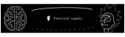
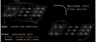

Multiple axon tracking
for biohybrid brain computer
interfaces
from directional living neural networks
Considering the effort going into a master thesis, it is unfortunate that it's read by only a few people. Understandably so. Who wants to read 40-60 pages of dry academic English? This text attempts to compress my work into a blog post-like format that is accessible to a wider audience. The title was the last unnecessarily academically bloated thing, I promise.
Feel free to scim through.
What we are building
The brain represents information in electrical signals (probably; we’re not 100% sure). Tapping into those electrical signals is interesting for understanding how the brain works, and in which ways diseased brains fail to work.
Measuring electrical signals in the brain already works quite well. Research groups and companies like Elon Musk’s Neuralink put electrodes in the brain to record electrical activity. Why is this useful? Well, for example, if you lost an arm these signals can be used to control a prosthesis, greatly improving your quality of (cyborg) life.
Compared to measuring signals, the delivery of electrical signals works a lot less well right now. Applying a voltage pulse through a metal electrode will activate entire brain regions instead of single neurons. This spatial resolution is a bottleneck when we want to pass a lot of information to the brain. Think of someone who lost their vision. To deliver even just a 32x32 px image into their brain one needs to represent information of 1024 pixels!
Our brain-stimulating interface does things quite a bit differently. Instead of delivering stimulation through metal electrodes, we grow new neurons into the brain that function as living electrodes. If your first impulse is ‘that’s bizarre’ - I am with you; it is an unconventional approach. We can control these artificially introduced neurons through an electrical interface on the brain surface. The advantages are biocompatibility and spatial stimulation resolution. But see for yourself.
How we make a biohybrid implant
One of the downsides is that the engineering behind the biohybrid implant is quite challenging. Building things from biological components like axons is hard because we lack accurate equations that describe complex biological systems.
The work presented here focuses on a specific engineering challenge of the biohybrid implant. To conceptualize the problem, one needs to better understand the inner workings of our device.
Component 1: The neurons we use for our implant are retinal ganglion cells from embryonic rats. Why those? Because one can easily culture them in a dish and their axons grow quite fast. We use embryonic-, instead of adult ones since they are more prone to form new connections.
Component 2: The neurons we grow into the brain need some type of “housing”; we can’t just sprinkle them on the host brain and expect them to do what we want. First, this retinal ganglion cell containment needs to guide axons to where we want them to go (-> host-brain), and second, it should enable us to stimulate single axon channels. At the same time, the whole device should be as small as possible, because it eventually needs to fit under the skull.
These requirements are fulfilled by thin silicone membranes integrating small axon containers (black) and tiny axon channels (gray on red). To stimulate axons within a microchannel, these membranes can be put on glass dishes with electrodes (for testing) or silicone-membrane-electrodes (for final implant).
Which problem is addressed
As mentioned above, the silicone membranes (or microstructures) house retinal ganglion cells and guide their axons towards the desired location. We design our structures so that the outgrowing axons converge towards a common location: the output channel (part that is implanted in the future).
How can we guide a multitude of axons
towards a common
location?
The work described here focused on exactly that: Using different microstructure designs, how can we guide a multitude of axons towards a common location? More importantly, how can we minimize the number of axons growing towards their neighbors, instead of the output channel? This is crucial because those neighbor-grown axons could overlay two stimulation-electrodes effectively connecting them. This reduces the number of independently-addressable stimulation channels - the bandwidth!
We designed 21 different microstructures that aim to directionally grow axons from the seeding container to the output channel. By exploiting different axon-growth properties, we bias the growth away from neighbouring seeding wells. These 21 microstructures implement different design variables to find out how to best guide axon growth. Going into the details and rationale behind these designs would be quite lengthy, so for now, I won't dive deeper.
How to measure directional axon growth
Out of 21 designs, the goal here was to find the best performing one - a design guiding axons directionally to the output channel, and away from the neighbouring electrodes. We considered different screens for measuring if a microstructure design achieves high directionality. Because we had many different designs (21) and axon growth is highly probabilistic (high variance -> high sample size required), we needed a measurement with high throughput.
As the title suggests, we settled on tracking growth cones during the initial outgrowth phase to infer whether axons grow correctly or incorrectly. After seeding the retinal ganglion cells, we let them settle for 2 days. Then we put the culture under a confocal microscope and recorded outgrowth for 4-5 days. One such time lapse recording (crop) is shown below.

One can see that many axons are moving correctly towards the output channel (bottom/ seeding wells to top/ output channel), but some also grow backwards in the direction of neighbors. Because it would be completely unrealistic to track all those growth cones manually, we build a growth cone tracking model, short AxTrack. With tracked cones, we could directly infer whether axons grow correctly or incorrectly!
Machine learning-based growth cone tracking
How can we track an unknown number of objects over multiple frames? In machine learning-based computer vision, this is traditionally done in two steps:
- Look at a single frame and detect all the objects
- Link frame-wise detections to identities through time
1. Deep learning-based growth cone detection
Object detection is a classical computer vision problem. For about 8 years now, machine learning-based approaches have outperformed methods relying on manual modeling. The workhorse of this trend are deep convolutional neural networks (CNN) trained on lots of data with big compute. Our growth cone detector also relies on a CNN. Specifically, we train a one-shot detector which simply means all detections are obtained from a single pass through the CNN.
For training, we labeled three timelapse recordings yielding a total of 290 unique axons distributed over 320 frames (++ through heavy data augmentation). To alleviate the memory requirements of growth cone detection, we pass small 512x512 tiles through the CNN, instead of entire ~4K video frames. Those are stitched together in the end again.
Even for a human expert it can be difficult to identify growth cones in microchannels with high certainty. One very helpful trick is to check previous and future frames, thereby identifying visual similarities and characteristic dynamics. We try to provide the same information to the CNN by passing temporal context frames.
In the picture above, each block represents a sequence of 2d-convolution - batch normalization - non-linearity. The pink tiles are max-pooling operations, and FC stands for fully connected.
The architecture is inspired by the widely used You-Only-Look-Once (YOLO) architecture published by Joseph Redmon et al. in 2016. The CNN takes in five 512x512 px tiles and learns a mapping to a 3x12x12 label. We predict the existence of a growth cone in 12x12=144 tiny tiles. Then for each of these, we also learn the center xy-coordinates of the growth cone within that tiny tile. That’s what the 12x12x3 label represents.
2. Graph-based axon identity association
The CNN outputs video frames with detected growth cones. However, we still need to identify which detections correspond to the same growth cone across frames.
Which detections correspond to
the same growth cone across
frames?
Again, following common practice, we formulate this as an association problem represented by a graph (see reference). Each detection is represented as a node in the graph; each identity association by an edge capturing the likelihood that two nodes correspond to the same identity. Think of this graph as a long sequence where the length matches the number of video frames.
To define the graph fully, we need to come up with a cost function that captures the likelihood that two nodes correspond to each other. In this application, we compute the A* distances through the microchannels between detections (A* is a find-shortest-path algorithm). High A* distances between detections result in a high cost. When we now solve the graph for minimum cost flow plus appropriate constraints (i.e. each node has one entry-, one exit edge), we get the “most likely” associations between detections.
How AxTrack performs
How well does it work? It performs quite well; see for yourself!

The quantitative performance measures also look good. Only 27% of all detections are false-positives, and 21% are false-negatives. When doing the association step afterwards, the false negative rate increases to 32%. Still, the model tracks 55% of axons more than 80% of the time, and 25% of all axons between 20%-80% of the time. See below.
Growth velocity from tracking
This little methods excursion summarised how we track axon growth cones in microscopy data. Let's recall why this tool is useful for us: we want to measure if axons grow towards the desired location, the output channel, or away from it towards neighboring seeding wells. Measuring this across the 21 different PDMS designs would reveal how to best guide axons from many source locations to a common convergence point.
While this screen of directionality was the primary motivation behind the tracker, it turns out, we get more information from it than just growth direction over time: The tracker reveals single axon growth velocities and detects stagnating growth! This comes directly from calculating the spatial distance between detections, then dividing this growth distance by the inter-frame time interval (here 30 minutes).
Specific design feature induces much higher growth velocities:
narrow
PDMS microchannels
Interestingly, the growth velocity across the 21 PDMS designs actually differs significantly! It turns out that a specific design feature induces much higher growth velocities: narrow PDMS microchannels! Check how much faster the axons on the right grow!
8 um wide channels

1.5 um wide channels

Additionally, when using narrow channels, the proportion of stagnating axons becomes virtually zero. More intricate design motifs such as 2-joints and rescue loops turn out to slightly slow axon growth.

You may wonder what the colors refer to in these boxplots. Each color represents one of the 21 PDMS designs mentioned before. We can pool these designs into groups by splitting with respect to design features, for example, the channel width: Except D02 & D03 (two blue tones left boxplot), all designs use 8 um wide channels. Below is a summary of all 21 designs.
Start looking at D00, then follow the arrows. Each arrow represents a changed design variable. For example, from following the arrows we see that D06 and D08 have three 2-joints, 8 um channel widths and a directional joining lane.
Design directionality from tracking
After this detour into axon growth velocity, let's return to the directionality performance in those 21 PDMS designs. How can we infer the degree of forward growth towards the output channel using the tracked growth cones?
In the association step for the tracker, do you recall that we use the A* distances through the microchannels to link detections? This calculation of A* distances can be used for other purposes as well. To infer directionality, we simply compute the A* distance to the output channels over time. Because the shortest path to the target location is also the correct one (no detours on preferred direction), we can simply check if the A* distance to the output channel decreases over time. Let’s look at an example.

This axon named Ax064 decided to loop around a rescue loop, then take off in the wrong direction. Luckily, 5 days after seeding, another rescue loop redirects the axon back on track. These plots can reveal a lot about axon growth decisions, a parabola for example marks a bad transition (negative slope changes to positive one).

When subtracting the initial distance to the output channel, we get a beautiful visualization of how many axons are growing correctly versus incorrectly. We can simply look at each of those gray lines representing an axon and see if the distance overall increased or decreased.
Directionality performance
As a simple first metric, let’s compare which proportion of axons grow in the right direction versus the wrong one (the numbers in the plot above).
Okay, there is a lot going on in these plots, let’s go through the observations one by one. First, we see that on average about 60% of axons grow correctly independent of the designs. When splitting the data by design, we don’t find a significant difference in the forward-growth bias.
In contrast, we do find that backwards growth across designs does differ significantly. So depending on the microstructure design we use for the implant, we get different degrees of cross growth! Especially the designs D12 to D20 seem to do very well! In those designs, we only observe about 10% of axons growing towards neighbors. By the way, the proportions don't necessarily add up to 100% because axons that changed distance by less than 50 um were ignored.
However, there is one caveat to the statistics here: When comparing single designs with each other, we don’t find significant differences, so we cannot faithfully rank them. This is because with so many variants (21), the bar for statistical significance rises steeply, and we only have about 8 samples per design. So how can we figure out which designs work best, and which design features matter most?
We can increase the sample size by splitting the data design-features-wise, as done in the previous boxplots. This analysis reveals three significant findings on how to design many2one guiding structures:
1. Frequently joining channels using 2-joints
instead of
the final lane reduces backwards growth.
2.
Rescue loops are reducing
backwards growth and don’t decrease forward
growth.
3.
Joining early instead of late
increases forward growth
(D05 in blueprint above
joins late).
How good is the best design
The tracking method successfully identified features that impact directional growth. But the metric we looked at so far is not very tangible. Is it gOoD to have 10% of axons growing incorrectly? How much cross-talk may this relate to? For this reason, we looked at a second metric that is based on the number of axons reaching the output channel versus the neighbors. Again, this information can directly be derived from the growth cone tracks.
The metric δ was intentionally kept simple to keep it interpretable. We compute a smoothed ratio between the number of axons reaching the output channels and the neighbors. This yields a fold that tells us how many more axons reach the desired-, versus undesired location. The best performing designs show between 4 and 2.5 more axons in the output channel than in neighboring wells. As we have seen before, these mainly include designs between 12 and 20 which use a single 2-joint and 3 rescue loops. Let’s look at the most directional structure, D20!

You may wonder why we did not entirely rely on this metric. Well, one drawback is that it focuses solely on final location and we have lots of data where no axons have reached target-, or off-target locations yet. This is also the motivation behind smoothing (+1) - getting more data and weighting small axons counts less.
Towards even better guidance
Our best designs already work quite nicely, but we still asked ourselves how they could be improved further. After all, only a few design variables were identified as significant drivers of directional growth. For example, D12-D16 used different 2-joint motifs, but we couldn’t find a significant difference between them. Because of that, we designed new experiments that focus in on the impact of single guidance design motifs.
I won't go into the details of these experiments because the results are quite preliminary and need a few more samples to back the findings. These experiments go into the nitty-gritty details of designing PDMS guidance microstructures, a topic I don't want to open up. Just beware there is a path forward to engineer even more directional microstructures.
Closing words
As for what to do next, we should confirm the directional information flow (electrical signals) through these designs. So far we only looked through an anatomical lens. There likely is also a lot of headroom to increase tracking performance by deviating from the one-shot approach, incorporating dynamics constraints on detection association, and training on more data.
Here is the what to remember in 4 points:
1. Current brain stimulation technology suffers from low spatial resolution.
2. Biohybrid implants potentially solve this - but require directionally grown axons.
3. AxTrack model identified PDMS designs with nearly 4-fold directionality.
4. This achieves higher bandwidth biohybrid interfaces (yay:)